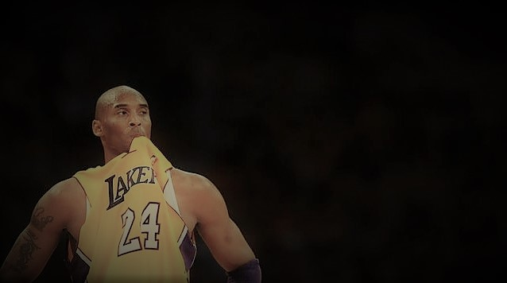
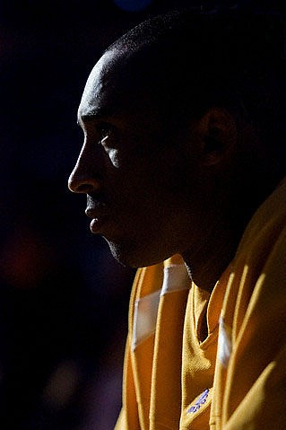
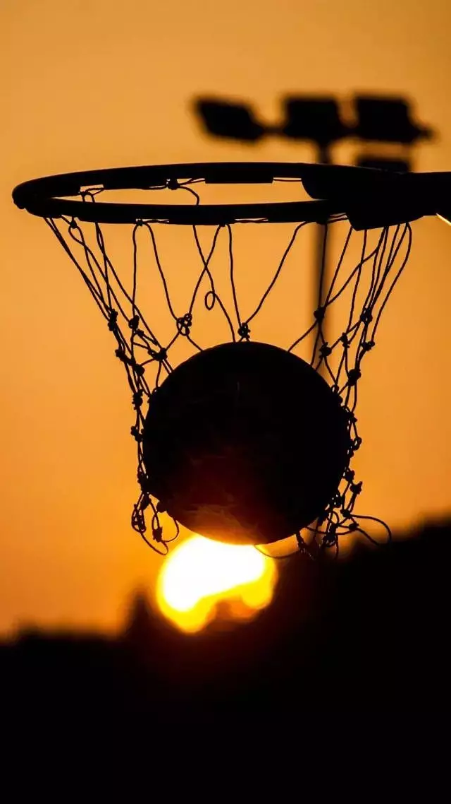
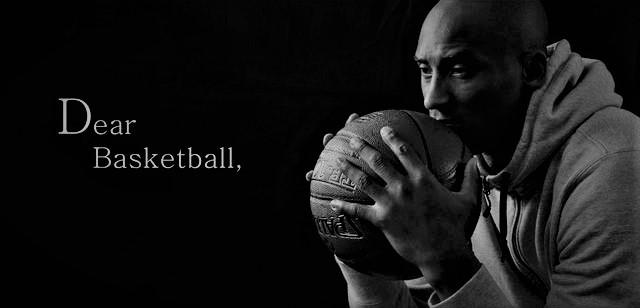

|
我没有范思哲的衣服，没有Gucci的钱包，没有大卫杜夫的香水，没有爱马仕，没有LV，没有ARMANI—我只有一件球衣，上面的logo和号码是我的信仰；我的旧球鞋上面布满折痕；是的，我没有名牌来包装自己，但是我有自己的乐趣。落日下的球场，血与汗的战场，那里才是我荣耀的地方。球场才是我的乐趣。 我们没有100cm的垂直弹跳，也没有超过身高10cm以上的臂展；我们没有4秒钟运球贯穿篮球场的速度，也没有一步过人的惊人爆发力；我们没有两米以上的个子，也没有180kg深蹲的力量。但是我们可以投篮，可以传球，可以帮助队友挡拆。——篮球场没有绝对的天赋，喜欢篮球就是你最大的天赋！ |
|  |
|
我们为了篮球洒过汗，受过伤，但我们仍就坚持，可能我们倒下过很多次，我们被嘲笑过，被羞辱过，被无视过，可我们从未放弃，我们渴望打球，不管天气如何，不管场地如何，都阻挡不了我们对篮球的执着。我们的执着，让一群陌不相识的人成为了最真挚的朋友。 “我不想成为迈克尔·乔丹，也不想成为魔术师约翰逊，我只是想在我职业生涯结束后，面对着镜子，可以问心无愧的对自己说，我还是那个阿伦-艾弗森。”
我们为了篮球洒过汗，受过伤，但我们仍就坚持，可能我们倒下过很多次，我们被嘲笑过，被羞辱过，被无视过，可我们从未放弃，我们渴望打球，不管天气如何，不管场地如何，都阻挡不了我们对篮球的执着。我们的执着，让一群陌不相识的人成为了最真挚的朋友。 |
 |
|  |
人生就如同投篮,总会有打铁,总会有磕磕绊绊,也会有手感火热的瞬间。把握每一个投篮的机会,在这片球场上篮球和球筐组成了每个人的人生理想,在这场战斗中会领先也会落后,每一次决择就是一个关键球,但是它影响的只是比赛的进成和走向,终场哨响的那刻,全场观众都会为你起立欢呼。
“篮球的直径是25公分，而篮框的直径有45公分半左右，几乎比篮球大一倍，对每一个球员来说，将25公分篮球投进45公分半的框框里，却是一段遥远艰辛的路程，但一旦做到了，45公分半的框框里，为我们打开的世界，却是无限大”Enjoy our life，enjoy ourself。 |
|  |